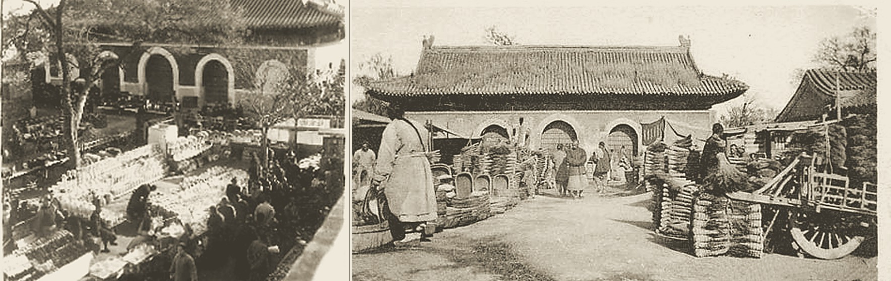
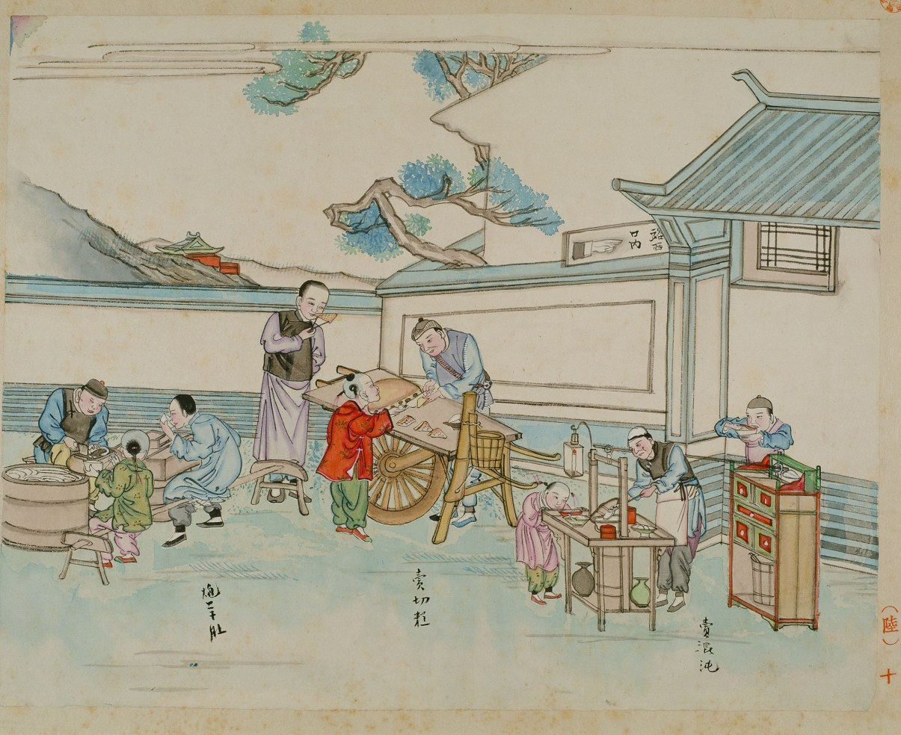
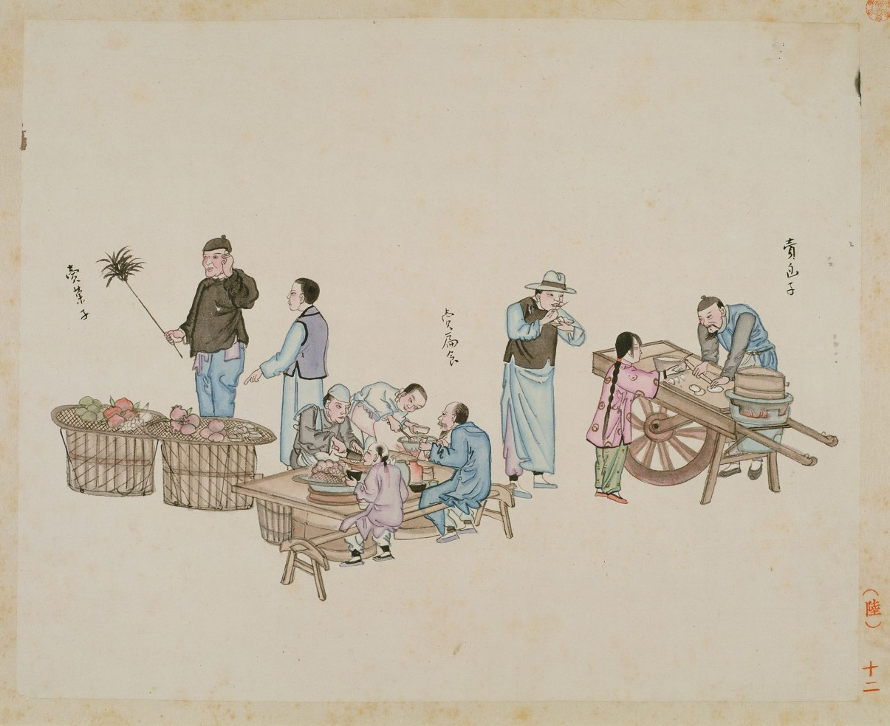
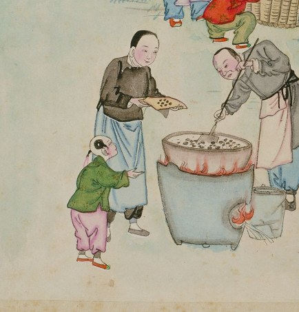
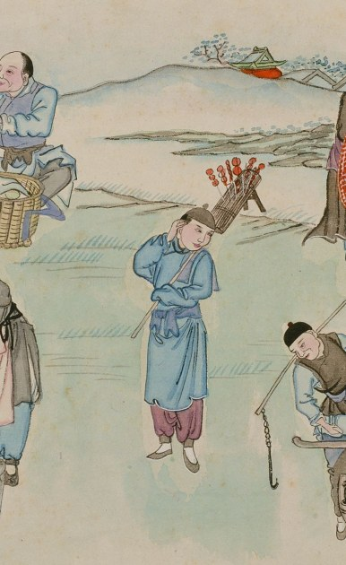
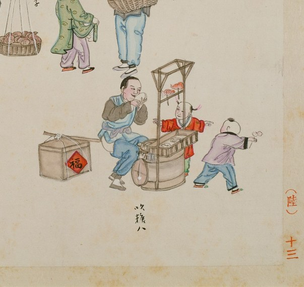
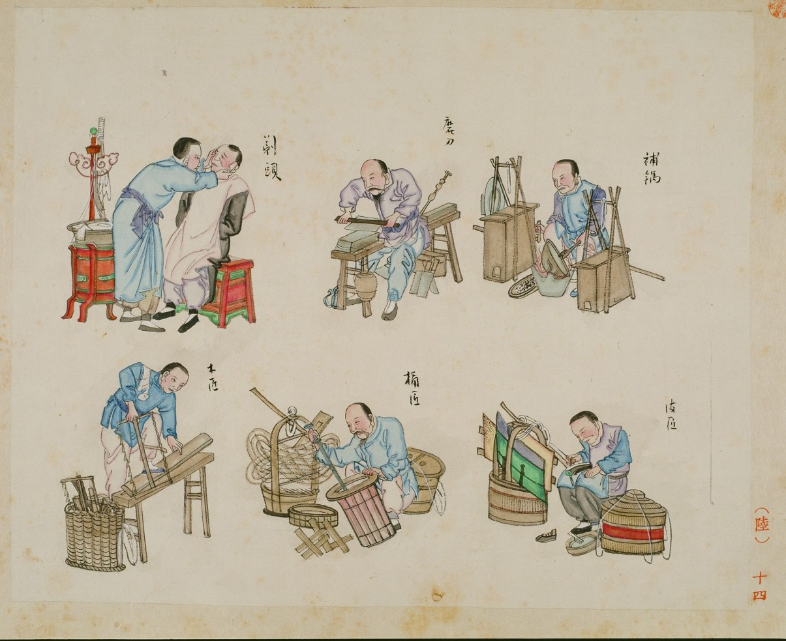

北京风俗图谱 · 市井第六
一百多年前
北京大集上都有什么
Longfu Temple Fair, 1452–2026

一百年前，一个日本人请中国画师把这里的市集画了下来。他画画的时候，庙已经烧掉二十四年了。
场景 · Scene 01
隆福寺庙会
《北京风俗图谱 · 市井第六》隆福寺庙会图
老北京管它叫「东庙」，和西四的护国寺东西相对。《日下旧闻考》记：「每月之九、十有庙市，百货骈阗，为庙市之冠。」
前史 · 1901
庙烧了几回，
集复了几度

清末老照片 · 隆福寺庙会与扫帚市（火灾前的庙宇原貌）
光绪二十七年的一个夜里，看庙的喇嘛瞌睡中碰倒油灯，天王殿、三佛殿、钟鼓楼烧了个干净。庙，从此没再修。
庙没了，喇嘛把地皮一块块租给摊商，收的钱有个名目，叫「香钱」。市集改在每月一、二、九、十开市，比烧之前还旺。
1925 年，日本汉学家青木正儿逛到这里。他不用相机，偏请北京画师刘延年等人把这片市集画下来。就是这本《北京风俗图谱》。
画里这片热闹，是在烧过的庙址上摆出来的。木鸟杂记 · 读《北京风俗图谱》
场景 · Scene 02 · 深夜食堂
路边摊三件套

场景 · Scene 03
蹲在路边
吃碗扁食

卖扁食（饺子）· 卖包子 · 卖果子
没有堂食，没有外卖。长凳一摆就是食堂，推车卖包子的就是流动早餐车。小时候校门口那个早点摊，就是这么个营生。
场景 · Scene 04 · 童年
一百年前
小孩的快乐

糖炒栗子 · 大锅现炒

冰糖葫芦 · 扛把叫卖

吹糖人 · 围观看呆
糖炒栗子、糖葫芦、吹糖人，今天庙会上哄小孩，还是这三样。
场景 · Scene 05 · 行当
剃头挑子一头热

剃头 · 磨刀 · 补锅 · 木匠 · 桶匠 · 皮匠
六个走街串巷的行当，如今大多只留在老话里了。剃头倒还没绝迹，立交桥底下、小公园门口，偶尔还能碰见支摊的老师傅。
后记 · Colophon
五百年，
两把火，一次震
老北京有句俗谚：大火不烧旺地。下次路过东四，不妨去看看。